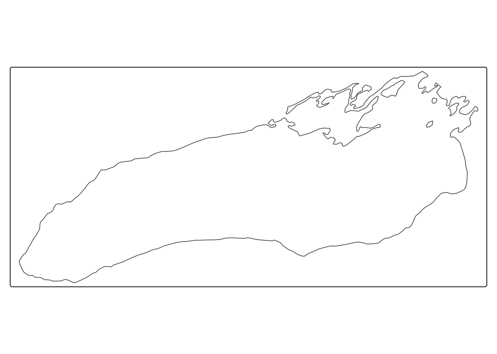
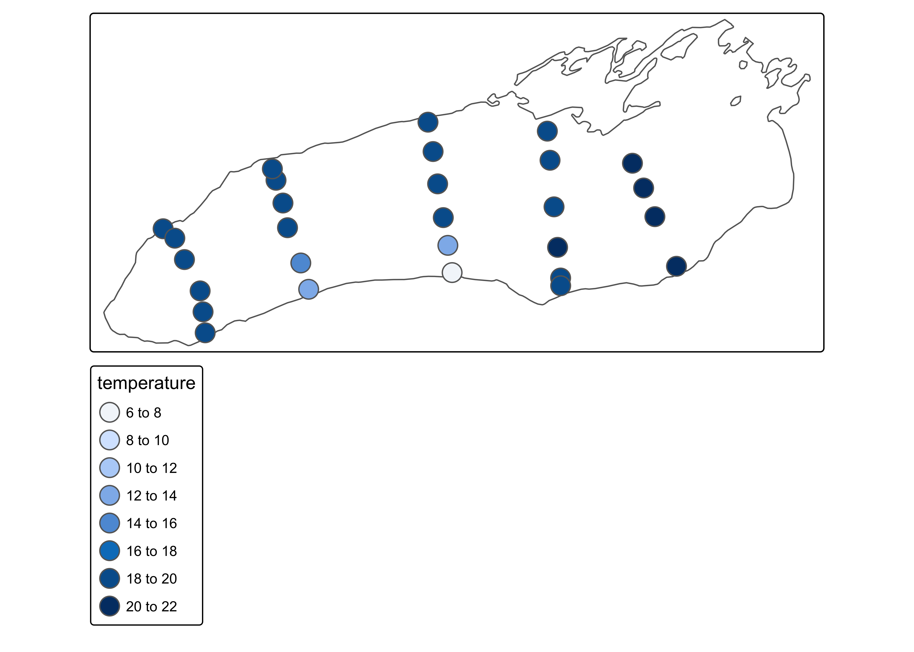
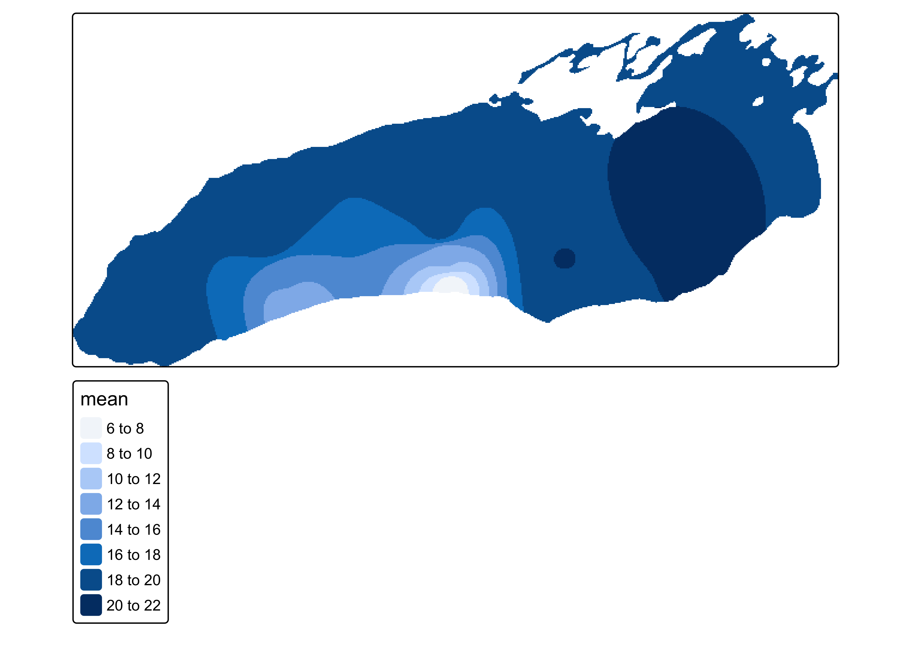
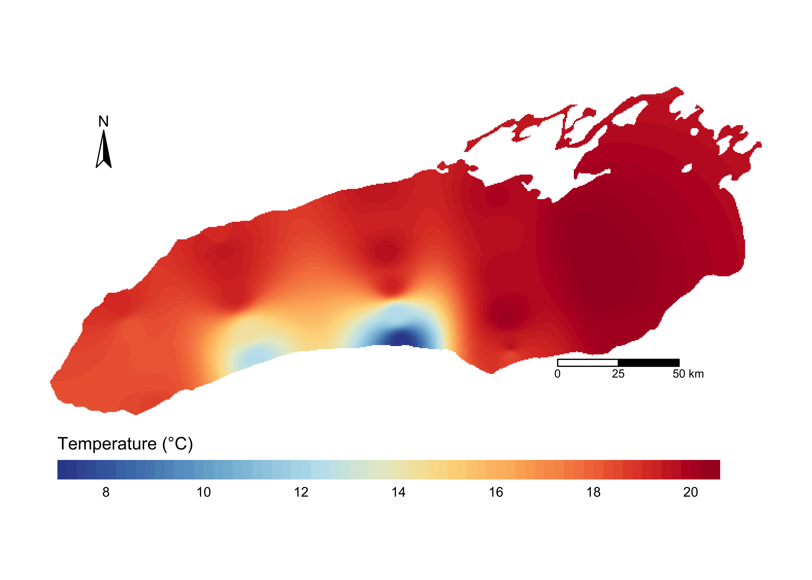

# install.packages("tidyverse")
# install.packages("sf")
# install.packages("terra")
# install.packages("gstat")
# install.packages("remotes")
# install.packages("pacman")
# remotes::install_github("r-tmap/tmap")
# remotes::install_github("mtennekes/tmaptools")
pacman::p_load(tidyverse,
sf,
terra,
gstat,
tmap,
tmaptools,
install = FALSE)Spatial Interpolation Example
Purpose of Document
In our Great Lakes work, we often want to spatially interpolate variables across the lake. Here, I show one approach to doing this, using distance-weighted interpolation from the gstat package.
Installing and Loading Packages and Data
First, we need to install and load packages. Note that some versions do matter in this case, as tmap is undergoing breaking changes as it transitions to v4. Also, if you’re a Mac or Linux user, you may need to separately install the PROJ, GDAL and/or GEOS software. I recommend you do this using homebrew.
Next, we’ll load our data objects. First, we have an outline of Lake Ontario, which I downloaded from the USGS. We’ll also project it to a Great Lakes specific projection.
ont_outline <- read_sf("data/ontario_outline/hydro_p_LakeOntario.shp")
proj_outline <- ont_outline %>%
st_transform(crs = "EPSG:3174") %>%
st_union()
tm_shape(proj_outline) +
tm_borders()
Beautiful. Next, we’ll load in our data to plot. In this case, it’s a csv file which contains temperature measurements for stations across Lake Ontario, collected by the EPA on the September 2023 CSMI cruise.
temp_df <- read_csv("data/temp_measurements.csv")
glimpse(temp_df)Rows: 28
Columns: 4
$ Station_ID <dbl> 8, 9, 12, 17, 18, 19, 27, 28, 29, 33, 34, 35, 38, 39, 40, …
$ temperature <dbl> 18.9786, 19.0417, 18.0735, 18.4766, 18.1505, 18.1145, 19.2…
$ latitude <dbl> 43.62317, 43.58533, 43.50333, 43.22533, 43.30400, 43.38283…
$ longitude <dbl> -79.45317, -79.39617, -79.35367, -79.27167, -79.27567, -79…temp_sf <- temp_df %>%
st_as_sf(coords = c("longitude","latitude"), crs = "EPSG:4326") %>%
st_transform(crs = "EPSG:3174")
tm_shape(proj_outline) +
tm_borders() +
tm_shape(temp_sf) +
tm_symbols(fill = "temperature")
Okay! That’s looking good. Let’s move on to interpolation.
Interpolation
Now, we can assume that surface temperature is a continuous variable, and it’s generally reasonable to assume that we can interpolate temperatures between stations. This means that our end goal is to go from vector data (discrete points) to raster data (continuous data defined by the fill of a grid). What we’re essentially going to do is use our point measurements to create a function that predicts temperature across a 2D grid. In order to do that, we’ll first define a the resolution and spatial extent of the grid, and then map our values across it.
First, let’s define our grid.
# Create an empty raster from our ontario outline
# We'll first need to simplify our outline to an sf, not sfc
outline_sf <- st_sf(proj_outline)
grid <- rast(outline_sf, nrows = 320, ncols = 640)
tm_shape(grid) +
tm_raster()
Thrilling - we have an empty raster. Changing the nrows and ncols will change the resolution of that grid, which will affect how “smooth” your raster looks at the end. However, higher-resolution grids will take longer to calculate.
In the enxt step, we’ll use a spatial model (defined by gstat) to predict the values of a variable at specified locations. Crucially, we can’t feed this model a raster grid; rather, it accepts vector points. As such, we need to extract the midpoint of each raster grid cell as a point, and coerce it to an sf object. We’ll also filter it such that we only predict values within our Lake Ontario outline.
# Extract mid points
xy <- xyFromCell(grid, 1:ncell(grid))
# Coerce to project point geometry
points_to_predict <- xy %>%
as.data.frame(xy) %>%
st_as_sf(coords = c("x","y"),
crs = "EPSG:3174") %>%
st_filter(proj_outline) # Filter to be within Lake OntarioNow that we’ve prepped those, we can move to interpolation. First, we build the model, which describes temperature over space, and then we predict the temperature for each of our points_to_predict. This is similar to using lm to build a linear model, and then using predict to calculate new values in a dataframe.
The crucial tuning parameter here is idp, which affects how quickly our temperature prediction decays towards the mean as you travel away from a measure point. This is worth playing around with to achieve a rational-looking map.
# Build the model
ip_model <- gstat(formula = temperature ~ 1,
locations = temp_sf,
nmax = nrow(temp_sf),
set = list(idp = 3))
# Predict temps
temp_preds <- predict(ip_model, points_to_predict) %>%
vect() # Needed to work in terra[inverse distance weighted interpolation]# Convert points to a raster
output_raster <- terra::rasterize(temp_preds, grid, field = "var1.pred", fun = "mean")
# Check our new raster
tm_shape(output_raster) +
tm_raster()
Wow! We just made an interpolated raster of our data. Let’s clean up the plotting so we finish with a beautiful map.
tm_shape(output_raster) +
tm_raster(col.scale = tm_scale_continuous(values = "tol.sunset"),
col.legend = tm_legend(title = "Temperature (°C)",
orientation = "landscape",
frame = FALSE)) +
tm_layout(frame = FALSE) +
tm_compass(position = tm_pos_auto_in()) +
tm_scalebar(breaks = c(0,25, 50), position = c(.7,0.2), text.size = .6)
Looks good! I hope you enjoyed the tutorial.
sessionInfo()R version 4.3.2 (2023-10-31)
Platform: aarch64-apple-darwin20 (64-bit)
Running under: macOS Sonoma 14.5
Matrix products: default
BLAS: /Library/Frameworks/R.framework/Versions/4.3-arm64/Resources/lib/libRblas.0.dylib
LAPACK: /Library/Frameworks/R.framework/Versions/4.3-arm64/Resources/lib/libRlapack.dylib; LAPACK version 3.11.0
locale:
[1] en_US.UTF-8/en_US.UTF-8/en_US.UTF-8/C/en_US.UTF-8/en_US.UTF-8
time zone: America/New_York
tzcode source: internal
attached base packages:
[1] stats graphics grDevices utils datasets methods base
other attached packages:
[1] tmaptools_3.1-1 tmap_3.99.9000 gstat_2.1-1 terra_1.7-71
[5] sf_1.0-14 lubridate_1.9.3 forcats_1.0.0 stringr_1.5.1
[9] dplyr_1.1.4 purrr_1.0.2 readr_2.1.4 tidyr_1.3.0
[13] tibble_3.2.1 ggplot2_3.5.0 tidyverse_2.0.0
loaded via a namespace (and not attached):
[1] tidyselect_1.2.0 viridisLite_0.4.2 fastmap_1.1.1 leaflegend_1.2.0
[5] leaflet_2.2.1 pacman_0.5.1 XML_3.99-0.15 digest_0.6.33
[9] timechange_0.2.0 lifecycle_1.0.4 magrittr_2.0.3 compiler_4.3.2
[13] rlang_1.1.2 tools_4.3.2 utf8_1.2.4 yaml_2.3.8
[17] data.table_1.14.10 knitr_1.45 FNN_1.1.4 htmlwidgets_1.6.3
[21] bit_4.0.5 sp_2.1-1 classInt_0.4-10 RColorBrewer_1.1-3
[25] abind_1.4-5 KernSmooth_2.23-22 withr_2.5.2 leafsync_0.1.0
[29] grid_4.3.2 fansi_1.0.6 xts_0.13.2 cols4all_0.7
[33] e1071_1.7-13 leafem_0.2.3 colorspace_2.1-0 scales_1.3.0
[37] dichromat_2.0-0.1 cli_3.6.2 crayon_1.5.2 rmarkdown_2.25
[41] intervals_0.15.4 generics_0.1.3 rstudioapi_0.15.0 tzdb_0.4.0
[45] DBI_1.2.2 proxy_0.4-27 stars_0.6-4 parallel_4.3.2
[49] base64enc_0.1-3 vctrs_0.6.5 jsonlite_1.8.8 hms_1.1.3
[53] bit64_4.0.5 crosstalk_1.2.1 units_0.8-5 glue_1.6.2
[57] lwgeom_0.2-13 codetools_0.2-19 stringi_1.8.3 gtable_0.3.4
[61] raster_3.6-26 munsell_0.5.0 pillar_1.9.0 htmltools_0.5.7
[65] R6_2.5.1 vroom_1.6.5 evaluate_0.23 lattice_0.21-9
[69] png_0.1-8 class_7.3-22 Rcpp_1.0.11 widgetframe_0.3.1
[73] spacetime_1.3-1 xfun_0.41 zoo_1.8-12 pkgconfig_2.0.3